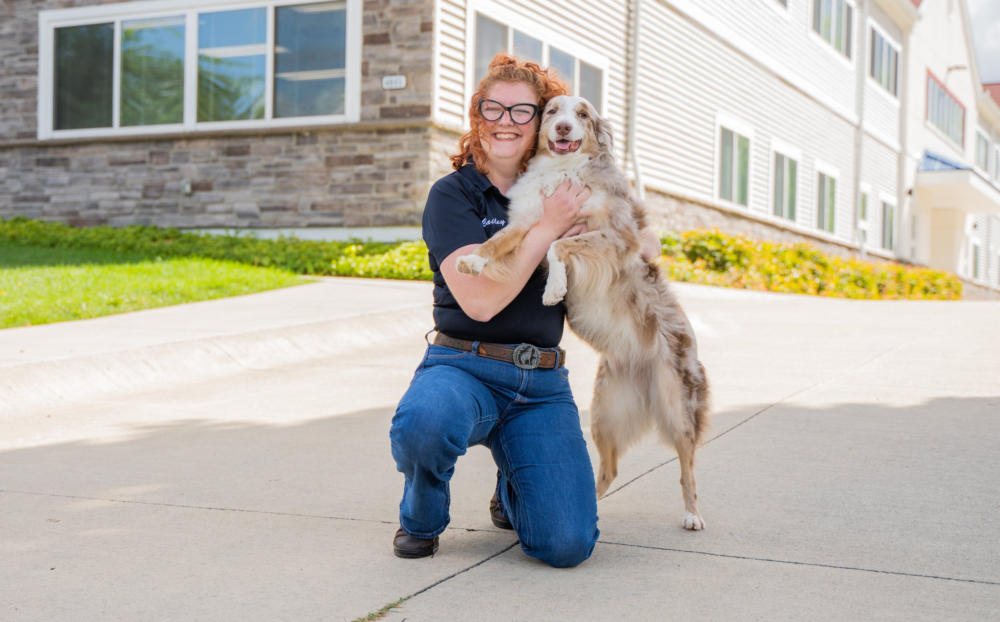

Bailey Brown
Versailles, KY
Bailey became a trainer after LDTT helped her own dog, and now helps families learn to love and lead their dogs again.

Versailles, KY
Bailey became a trainer after LDTT helped her own dog, and now helps families learn to love and lead their dogs again.
Bailey Brown Versailles, KY Bailey Brown is originally from Lexington, Kentucky, and now makes her home in Versailles, KY. She knew she needed help with the behavior of her own dog, so she sought the help of an LDTT trainer. Impressed with the progress they made, she decided to jump on board and become a trainer herself.
“I wanted to help other people learn to love their dogs again. I really struggled with my dog before she was trained by LDTT and now we are a great team. I love training animals! I got my first dog when I was 2 and my first horse when I was 7.
Working with animals has always been a love of mine and always will be.” When she’s not training, Bailey enjoys horseback riding, hiking, fishing, playing video games, and spending time with her family.
Send your request directly to Lorenzo's office with Bailey Brown already assigned as the source trainer.